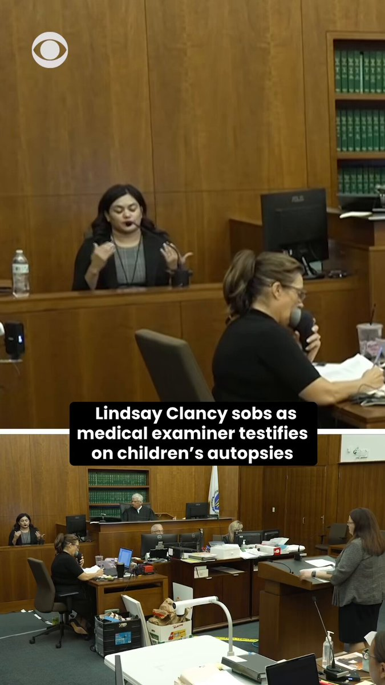

@CBSNews
📝 原文: A single ticketholder in Illinois won a Powerball jackpot of $1.04 billion Wednesday night, the game says.
🇨🇳 译文: 游戏称，周三晚上，伊利诺伊州的一名彩票持有者赢得了 10.4 亿美元的强力球大奖。

🕒 2026-08-13T06:02:05+00:00
| 来源 | 旧窗口内数量 | 本次新增 | 本次淘汰 | 当前窗口内共有 |
|---|---|---|---|---|
| 推文 + Dawn 新闻 | 0 | 21 | 1 | 20 |
| ARY News | 0 | 0 | 0 | 0 |
注：淘汰数 = 旧窗口内数量 + 本次新增 - 当前窗口内共有





暂无文章。